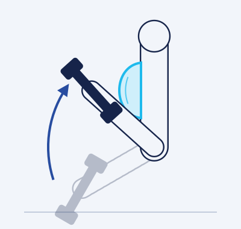
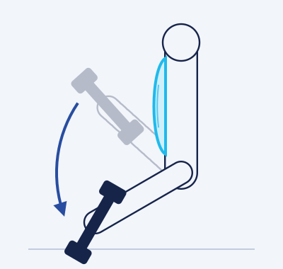
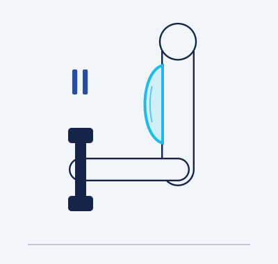

جميع حقوق هذا الكتيّب محفوظة للمؤلفة، المدرّبة ساره (Nav Coaching). لا يحق لحامل النسخة، مدفوعة كانت أو مجانية، نشرها أو نسخها أو مشاركتها أو إعادة بيعها بأي شكل من الأشكال، ومن يخالف ذلك يعرّض نفسه للمساءلة القانونية.
يستند محتوى الكتيّب إلى مراجع علمية معتمدة وخبرة عملية، وهو محتوى تثقيفي موجّه للأفراد الأصحاء. لا تغني المعلومات الواردة فيه عن استشارة الطبيب أو أخصائي العلاج الطبيعي أو أخصائي التغذية المرخّص، خصوصًا في حالات الحمل، أو الأمراض المزمنة، أو الإصابات، أو عند تناول أدوية.
تنبيهلا تتحمّل المدرّبة مسؤولية فهم المحتوى أو تطبيقه بطريقة غير صحيحة. وعند الشعور بألم حاد أو دوخة أو ضيق تنفّس غير معتاد أثناء التمرين، يجب التوقف فورًا ومراجعة مختص.
المقدمة
في ظل قلّة المراجع العربية الموثوقة في مجال الرياضة، يأتي هذا الكتيّب ليقدّم أسس التمرين والتغذية الصحية بأسلوب مبسّط وواضح، بحيث يتمكّن المبتدئ من إعداد جدول تمارين واتّباع نمط غذائي يستند إلى مبادئ علمية راسخة.
أضع بين يديك في هذا الكتيّب حصيلة خبرتي مع أكثر من 600 مشترك ومشتركة في مجالَي التغذية والتمارين. ستجد فيه الأساسيات والمعلومات الضرورية لفهم التمرين والتغذية فهمًا أعمق وتطبيق النصائح بشكل عملي، بما يدعم تقدّمك نحو أسلوب حياة صحي ومستدام، سواء كان هدفك خسارة الوزن، أو بناء العضلات، أو الحفاظ على صحتك العامة.
لا يقتصر هذا الكتيّب على نصائح عابرة، بل يلخّص سنوات من العمل مع مئات المتدرّبين والمتدرّبات، لتتعلّم كيف تصمّم جدولك التدريبي الخاص وتحافظ على لياقتك ومرونتك، وتستمتع برحلة التحوّل نحو الأفضل بإذن الله.
إن كنت من المتدرّبين معيلا تتردد في التواصل معي متى احتجت إلى توضيح أي نقطة في هذا الكتيّب. من المهم الاطلاع على محتواه، مع أنك ستكتسب معظم المعلومات خلال التطبيق العملي معي. وتذكّر أن ما ورد هنا قد لا يتوافق تمامًا مع حالتك الخاصة، فخطتك الشخصية موجودة في ملفك التدريبي.
خالص الشكر والامتنان لاختيارك لي شريكًا في رحلتك نحو حياة صحية ومتوازنة.
لماذا كُتب هذا الكتيّب، ومن هي المدرّبة التي تقف خلفه.
1.1الهدف
يهدف هذا الكتيّب إلى تقديم مرجع شامل ومتكامل عن عالم التمارين الرياضية وأسلوب الحياة الصحي، من خلال الدمج بين المعرفة العلمية والتطبيق العملي بأسلوب سهل وممتع. ويسعى إلى تمكين القارئ من فهم أساسيات التمرين وعلاقتها الوثيقة بالصحة واللياقة، مع إرشادات عملية وخطوات واضحة تسهّل إدماج النشاط البدني المنتظم في الروتين اليومي.
ومن خلال الجمع بين المعلومات الموثوقة وخطط التمارين المجرّبة والنصائح المبسّطة، يساعد الكتيّب قرّاءه على بناء أسلوب حياة صحي ومستدام، وتحقيق أهدافهم البدنية دون الوقوع في فخ البرامج القاسية أو الروتين الممل.
1.2خلفية المدرّبة وخبراتها
بدأتُ رحلتي في عالم الصحة واللياقة بعد أن أدركتُ الأثر العميق للعادات الغذائية والرياضية على جودة حياتنا. كانت البداية مع كرة السلة لاعبةً وقائدةً لفريق الجامعة (جامعة الإمام عبدالرحمن بن فيصل)، ثم في تدريب زميلاتي على أساسيات اللعبة. ومع مرور السنوات نما شغفي باللياقة من خلال القراءة والاطلاع المستمر على أحدث الدراسات العلمية، إضافةً إلى الممارسة العملية التي ساعدتني على بناء أسلوب تدريب فعّال ومرن في آنٍ واحد؛ وذلك بعد أن بدأتُ في هذا المجال وأنا لا أميّز حتى بين عضلتَي الباي والتراي!
1.العمل الميداني والخبرة العملية
عملتُ مدرّبةً شخصية في نادي «بيور جم»، وأشرفتُ على تدريب كثير من المشتركات وفق خطط مدروسة ومتابعة شخصية. تعاملتُ مع شرائح عمرية مختلفة وأهداف متنوعة: من خسارة الوزن، إلى التمرين بعد إصابات الركبة والظهر بالتنسيق مع المختصين، وصولًا إلى بناء الكتلة العضلية وتحسين اللياقة العامة. هذا التنوّع منحني فهمًا أعمق للتحديات التي قد يواجهها كل شخص، وعلّمني طرقًا متعددة لإيجاد الحلول المناسبة.
2.الاعتمادات والشهادات
أحرص دائمًا على تعزيز معرفتي بالعلم الحديث، ومن الشهادات والاعتمادات التي حصلتُ عليها:
ماجستير في التدريب الرياضي — جامعة ستيرلنق (University of Stirling).
مدرّبة معتمدة في السجل السعودي لمحترفي اللياقة البدنية (Saudi REPs — Level 4).
رخصة مهنية للمدرّب الشخصي — المستوى الثالث.
مدرّب شخصي — المستوى الرابع (NCSF Personal Trainer Level 4).
مدرّب شخصي — المستوى الثالث، وشهادة تدريب اللياقة قبل الولادة — أكاديمية أسباير (Aspire Academy).
شهادة المدرّب الشخصي من برنامج الباحث مينو هنسلمانز (Menno Henselmans CPT).
شهادة في الحركة الوظيفية (Functional Mobility).
شهادة تغذية رياضية — الجمعية الدولية لعلوم الرياضة (ISSA).
3.الإنجازات
من أبرز إنجازاتي المهنية حصولي على جائزة المدرّب الأول في «بيور جم» على مستوى المنطقة الشرقية، والمركز الثاني على مستوى المملكة في التدريب الشخصي. وتعكس هذه الجوائز حرصي على مواكبة التطوّرات العلمية وترجمتها إلى أساليب تدريب عملية تساعد كل متدرّب ومتدرّبة على تحقيق أهدافهم بفاعلية.
4.تجارب التدريب الحضوري والأونلاين
درّبتُ ما يقارب 1800 جلسة تدريب حضوري، إضافةً إلى التدريب عن بُعد الذي يتيح متابعة الأداء وتقييمه أسبوعيًا لمن لا تتاح لهم فرصة الحضور. وقد تجاوز عدد المشتركين الذين تعاملتُ معهم 600 مشترك ومشتركة في سنة واحدة، مما أكسبني خبرة عميقة في التدريب بحسب الفروق الفردية والأهداف المتنوعة.
5.المنهج العلمي والإنساني
أعتمد في أسلوبي على مزيج من المنهج العلمي والمرونة الشخصية؛ أتابع الأبحاث الحديثة في مجالَي التغذية والرياضة، وأطبّقها بما يتناسب مع ظروف الحياة اليومية لكل فرد. كما أؤمن بدور الدعم النفسي والتواصل البنّاء في تحقيق نتائج فعّالة ومستدامة، فالعوامل النفسية لا تقل أهمية عن البدنية في مسيرة أي شخص نحو حياة أفضل.
وآمل من خلال هذا الكتيّب أن أشارك ما تعلّمته على مدار سنوات من الخبرة الميدانية والدراسة، بأسلوب بسيط وعملي. ستجد في ثنايا المحتوى مسارًا تدريبيًا متكاملًا، مبنيًا على أسس علمية، وقابلًا للتكيّف مع متطلبات نمط حياتك وأهدافك الشخصية.
02
الفصل الثاني
المصطلحات المهمة
قاموس مختصر للمصطلحات التي ستتكرر في جدولك وفي هذا الكتيّب.
قاموس المصطلحات
المصطلح
الشرح
Set
الجولة أو المجموعة: عدد من التكرارات المتتالية تليها راحة.
Rep
العدّة أو التكرار: أداء الحركة مرة واحدة كاملة.
Volume
حجم التمرين: إجمالي العمل، ويُقاس غالبًا بعدد الجولات الصعبة لكل عضلة أسبوعيًا.
Tempo
سرعة أداء التمرين أو إيقاعه في مرحلتَي الرفع والإنزال.
Rest
الراحة بين الجولات.
Concentric
الانقباض بالتقصير (الحركة الإيجابية)، مثل رفع الدمبل في تمرين الباي؛ وهي عادةً المرحلة الأصعب.
Eccentric
الانقباض بالإطالة (الحركة السلبية)، مثل إنزال الدمبل في تمرين الباي؛ تعمل فيها العضلة وهي تطول، ويُنزَل الوزن بتحكّم مع اتجاه الجاذبية.
Isometric
الانقباض الثابت: تعمل العضلة دون تغيّر في طولها ولا حركة في المفصل، مثل تمرين البلانك.
Isolation
تمارين العزل: يتحرك فيها مفصل واحد، مثل Biceps Curl.
Compound
التمارين المركّبة: يتحرك فيها أكثر من مفصل، مثل Squat.
Super Set
أداء تمرينين متتاليين دون راحة بينهما، لنفس العضلة أو لعضلتين مختلفتين.
AMRAP
As Many Reps As Possible: أكبر عدد ممكن من التكرارات بأداء صحيح.
Drop Set
بعد الاقتراب من الفشل العضلي في الجولة الأخيرة، يُخفَّض الوزن مباشرة بنحو 10–30% (غالبًا 15–25%) وتُستكمل التكرارات دون راحة.
Failure
الفشل العضلي: الوصول إلى نقطة لا يمكن عندها أداء تكرار إضافي بأداء صحيح.
1RM
One Repetition Max: أقصى وزن يمكن رفعه لتكرار واحد فقط.
Calories
السعرات الحرارية: وحدة قياس الطاقة في الطعام.
Macros
المغذّيات الكبرى التي يحتاجها الجسم: البروتين، والكربوهيدرات، والدهون.
Mechanical Tension
التوتر الميكانيكي: الشدّ الذي تتعرض له العضلة عند مقاومة حمل خارجي، وهو المحفّز الأهم للبناء العضلي.
Metabolic Stress
الإجهاد الأيضي: تراكم نواتج الأيض (مثل اللاكتات وأيونات الهيدروجين) أثناء الجولات الطويلة، ويرتبط بالإحساس بالحرقان (Pump/Burn) أثناء التمرين، لا بألم العضلات في الأيام التالية.
Junk Volume
الحجم التدريبي غير المفيد: جولات إضافية لا تضيف تحفيزًا يُذكر بل تزيد التعب؛ ويُشار عادةً إلى أن تجاوز نحو 10 جولات صعبة للعضلة الواحدة في الجلسة قد يدخل في هذا النطاق.
RIR
Reps in Reserve: عدد التكرارات المتبقية قبل الفشل العضلي؛ مثلًا RIR 5 يعني أنك تستطيع أداء 5 تكرارات إضافية.
RPE
Rate of Perceived Exertion: معدل الجهد المحسوس من 1 إلى 10؛ RPE 1 جهد منخفض جدًا كالمشي الهادئ، وRPE 9 جهد قريب من الأقصى.
Recovery
الاستشفاء: العملية التي تتعافى فيها العضلات والجهاز العصبي بعد التمرين وتتكيّف، وهي جزء أساسي من التقدّم.
أنواع الانقباضات العضلية
كل تكرار في التمرين يمرّ بمرحلتين أو ثلاث، وفهمها يساعدك على التحكّم في الوزن بدل أن يتحكّم بك:

الانقباض بالتقصيرConcentric تقصر العضلة وهي ترفع الوزن.

الانقباض بالإطالةEccentric تطول العضلة وهي تقاوم الوزن نزولًا.

الانقباض الثابتIsometric تعمل العضلة دون حركة في المفصل.
لماذا يهمّك هذا؟التحكّم في مرحلة الإنزال (Eccentric) بدل إسقاط الوزن يرفع جودة التمرين ويقلّل احتمال الإصابة.
الرسوم: تصميم Nav Coaching خصيصًا لهذا الكتيّب.
03
الفصل الثالث
لماذا أتمرّن؟
فوائد التمرين تبدأ من الذهن قبل الجسد.
التغيير يبدأ من الداخل
التغيير يبدأ من الناحية النفسية أولًا، ثم الجسدية.
التغيير البسيط في البداية يضمن الاستمرار. نحن بشر، ومن الصعب أن نتأقلم مع تغييرات كثيرة دفعة واحدة؛ لذلك فأفضل طريقة هي تغيير العادات السلبية واحدةً تلو الأخرى، حتى الوصول إلى نمط الحياة المناسب والرضا عن نفسك.
ذهن أقوى = جسد أقوى.
فكّر في نفسك بعد سنوات: التمرين المنتظم استثمار يساعدك على الحفاظ على قوتك ولياقتك واستقلاليتك مع التقدّم في العمر.
تساعد على تقليل التوتر وأعراض الاكتئاب وصفاء الذهن، ويصبح لديك هدف أسبوعي يحفّزك ويمنحك لذة الإنجاز.
تساعدك على ترتيب يومك والتزاماتك أولًا بأول، فتترتب أولوياتك.
تعوّد النفس على الصبر، وأن لكل شيء وقته.
ترفع تقدير الذات.
الفوائد الجسدية
تحسّن كبير في القوة البدنية يسهّل أداء المهام اليومية الشاقة.
تحسّن في اللياقة القلبية، فيصبح صعود الدرج أو المشي لفترات طويلة أسهل وبتعب أقل.
كثير من الآلام الشائعة المرتبطة بضعف العضلات وقلة الحركة قد تتحسّن مع تقوية العضلات ويتحسّن القوام بإذن الله، ويبقى تقييم المختص ضروريًا عند الألم المستمر.
مع ازدياد قوة الجسم يقل الخمول والكسل ويزيد النشاط.
مع التغذية المناسبة: إبراز ملامح العضلات وتقليل الدهون الزائدة.
04
الفصل الرابع
تصحيح مفاهيم خاطئة
كثيرًا ما نسمع معلومات من غير المختصين في الرياضة أو التغذية، وقد تُبعد بعضنا عن التمرين. إليك أشهرها وتصحيحها.
أشهر المعتقدات وتصحيحها
إذا توقفتُ عن التمرين تتحوّل العضلات إلى دهون.
العضلات والدهون نسيجان مختلفان تمامًا، ولا يتحوّل أحدهما إلى الآخر. ما يحدث عند التوقف أن الكتلة العضلية قد تقل تدريجيًا، وإذا لم تنخفض السعرات المتناولة قد تزيد الدهون، فيبدو الأمر كأنه «تحوّل».
المرأة إذا رفعت الأثقال تصبح عضلاتها ضخمة مثل الرجال.
مستوى هرمون التستوستيرون لدى النساء أقل بكثير منه لدى الرجال، لذلك يصعب جدًا الوصول إلى هذه الضخامة دون سنوات من التدريب المتخصص والتغذية الموجّهة لذلك أو استخدام هرمونات. النتيجة المعتادة: جسم أقوى وأكثر تناسقًا.
تمارين البطن تحرق دهون البطن.
لا يمكن حرق الدهون من منطقة محددة بالتمرين. لدينا جميعًا عضلات بطن (Six pack)، لكن تغطيها طبقة من الدهون، وظهورها يحتاج إلى خفض نسبة الدهون عمومًا عبر نظام غذائي بعجز معتدل في السعرات مع النشاط. وينطبق ذلك على باقي أجزاء الجسم.
تمارين الخصر تنحت الخصر.
تمارين العضلات الجانبية (المائلة) تقوّيها وقد تزيد حجمها قليلًا، ولا تُذيب الدهون فوقها. مظهر الخصر يتأثر أساسًا بنسبة الدهون، وبتوازن عرض الظهر والأرداف. الهدف الأول من التمارين هو تقوية العضلات، والعضلات القوية تشدّ المنطقة وتحسّن مظهرها.
الأكل قبل النوم يزيد دهون البطن.
العبرة بإجمالي ما تأكله خلال اليوم، لا بتوقيت الوجبة. لكن يُفضّل تجنّب وجبة كبيرة قبل النوم مباشرة لأنها قد تؤثر على جودة النوم لدى بعض الأشخاص.
يجب تناول البروتين مباشرة بعد التمرين وإلا ضاعت الفائدة.
الأهم هو إجمالي البروتين اليومي وتوزيعه على الوجبات. يُنصح بتناول وجبة متكاملة تحتوي على بروتين خلال ساعات قليلة بعد التمرين (ويُفضّل خلال نحو ساعتين، خاصة إذا تمرّنت دون أكل قبلها)، ولا داعي للقلق إذا تأخرت قليلًا.
الملح غير مفيد للجسم.
الصوديوم معدن ضروري لوظائف الأعصاب والعضلات وتوازن السوائل، وإلغاؤه تمامًا خطأ. المطلوب الاعتدال؛ إذ توصي منظمة الصحة العالمية البالغين بألا يتجاوز الملح 5 غرامات يوميًا، وقد يحتاج من يتعرّق كثيرًا إلى تعويض أكبر.
الأكل العضوي مفيد أكثر من الأكل العادي.
الفروق الغذائية بين المنتجات العضوية والتقليدية صغيرة غالبًا، والعضوي لا «ينحّف» ولا يعوّض عن نظام غذائي غير متوازن. قد يكون خيارًا شخصيًا لأسباب أخرى، لكن لا داعي لدفع مبالغ إضافية بحجة أنه أفضل لخسارة الوزن أو للصحة بشكل ملحوظ.
أكل الدهون يرفع نسبة الدهون في الجسم، فالأفضل قطعها تمامًا.
الدهون الصحية مهمة جدًا: تدخل في بناء الخلايا، وهي مصدر للطاقة، وتساعد على امتصاص الفيتامينات (A وD وE وK)، وتكوين الهرمونات، وتنظيم الحرارة، ودعم المناعة وصحة الدماغ. يُنصح بأن تشكّل نحو 20–35% من السعرات اليومية، وانخفاضها عن 20% لفترات طويلة قد يضر بالصحة الهرمونية.
التجويع والحرمان أسرع حل لنزول الوزن.
صحيح أن الرقم على الميزان ينزل، لكن الثمن كبير: خسارة جزء من الكتلة العضلية، ونقص الفيتامينات المهمة، وانخفاض الطاقة والمزاج، وترهّل الجسم، وصعوبة الاستمرار والعودة السريعة للوزن. الأفضل اتباع نظام غذائي مناسب لاحتياج جسمك بعجز معتدل.
النظام الغذائي الصحي يعني قطع المطاعم والأكل المفضّل.
النظام الصحي لا يحرمك من أكلك المعتاد؛ إنما هو إدارة ذكية للسعرات. يمكن الالتزام بنحو 80% من الأكل المغذّي، وترك نحو 20% لما تحبه ضمن سعراتك.
اقطع الكارب تمامًا لأنه أساس المشكلة.
الكربوهيدرات مصدر طاقة رئيسي للجسم، خصوصًا للتمرين، وقطعها تمامًا ليس ضروريًا لخسارة الدهون. المهم الكمية ضمن سعراتك، واختيار المصادر الغنية بالألياف مثل الحبوب الكاملة والخضار والفواكه.
خل التفاح يساعد على الحرق.
الأدلة على أن خل التفاح يسرّع خسارة الدهون ضعيفة ومحدودة، ولا علاقة له بمعدل الحرق بشكل يُذكر. قد يفضّله بعض الأشخاص هضميًا، لكنه لا يغني عن العجز في السعرات، ويُستخدم مخففًا لحماية الأسنان والمعدة.
الكيتو أفضل نظام لنزول الدهون.
عند تساوي السعرات والبروتين تكون نتائج خسارة الدهون متقاربة بين الأنظمة المختلفة. الكيتو خيار يناسب بعض الأشخاص، لكن تطبيقه بطريقة خاطئة قد يسبب مشكلات أنت في غنى عنها؛ ويُستشار المختص قبل اتباعه، خاصة مع وجود حالة صحية.
يجب أداء تمرين جديد كل يوم.
تغيير التمارين يوميًا غير مفيد وقد يعطي نتيجة عكسية؛ فالجسم يحتاج إلى تكرار التمرين حتى يتكيّف ويتقدّم فيه. يكون التغيير بحسب تقدّمك، وغالبًا كل عدة أشهر (مثل 3–6 أشهر)، مع مراقبة التطوّر تدريجيًا.
الكارديو للتنحيف، وتمارين الحديد غير مهمة.
الكارديو مهم للياقة القلبية والصحة العامة، لكن تمارين المقاومة مهمة جدًا أيضًا لخسارة الدهون؛ فهي تحافظ على الكتلة العضلية أثناء العجز وتحسّن شكل الجسم وقوته. وزيادة الكتلة العضلية ترفع معدل الحرق اليومي بدرجة بسيطة لكنها مفيدة على المدى البعيد.
مشدّ الرياضة يستهدف البطن ويحرق دهونه.
لا يوجد جهاز أو مشدّ يستهدف دهونًا محددة ويحرقها؛ ما يفقده الجسم تحت المشدّ هو ماء بسبب التعرّق، ويعود بمجرد الشرب.
كلما تعرّقت أكثر في التمرين حرقت أكثر.
لو كان كذلك لكفى الوقوف تحت الشمس! التعرّق وسيلة الجسم لتنظيم حرارته، ويختلف بين الأشخاص. لا العرق ولا التعب ولا الألم هي ما يحدد جودة التمرين؛ فقد تتمرّن دون تعب واضح وجسمك يحرق ويبني عضلًا، والألم لم يكن يومًا مقياسًا لجودة التمارين.
تمارين الخفسات (Hip dips) تزيل الخفسات.
شكل الخفسات يعتمد كثيرًا على بنية عظام الحوض وتوزيع الدهون الوراثي، وهي ليست عيبًا. تقوية عضلات الأرداف قد تحسّن مظهر المنطقة وتملأ الفراغ جزئيًا، وخفض الدهون عمومًا يساعد أيضًا، لكن لا يوجد تمرين يلغيها تمامًا.
الإحماء غير مهم.
الإحماء يجهّز العضلات والمفاصل والجهاز العصبي للمجهود، ويُعد إهماله من العوامل التي قد تزيد احتمال الإصابة وتقلّل الأداء. (التفاصيل في فصل «نقاط مهمة»).
تمارين كثيرة في اليوم = نتيجة أسرع.
بالعكس؛ الإفراط في التمرين قد يوصلك إلى مرحلة الإجهاد التدريبي (Overtraining): ثبات في الأوزان، وإجهاد وإعياء مستمر، وأحيانًا إصابات لا سمح الله. التقدّم يحدث أثناء الاستشفاء، لا أثناء التمرين فقط.
أيام الراحة لا تهم فيها جودة الأكل.
الهدف من أيام الراحة هو الاستشفاء التام للعضلات والجهاز العصبي، والتغذية الجيدة جزء أساسي من ذلك. إهمال هذه الأيام يبطئ الوصول إلى هدفك.
المكسرات تسمّن.
لا يوجد طعام يسمّن أو ينحّف بذاته؛ هناك كمية تزيد الوزن وكمية تناسب هدفك. المكسرات مفيدة وغنية بالدهون الصحية، لكنها عالية السعرات، فالاعتدال في الكمية هو ما يحدد.
أقلّل وقت الراحة حتى لا «تبرد» العضلة.
العضلة لا تبرد بين الجولات. خذ راحتك واسترجع طاقتك لتكمل الجولة التالية بجودة، بشرط أن تعود نبضات قلبك إلى مستوى قريب من الطبيعي. وغالبًا تكون الراحة بين 1–3 دقائق للتمارين الأساسية (التفاصيل في فصل «نقاط مهمة»).
شرب البروتين شيك قبل التمرين يتعارض مع هدف التمرين.
هذا غير صحيح؛ التمرين يحفّز العضلة، والبروتين يزوّدها بما تحتاجه للبناء والاستشفاء، وتناوله قبل التمرين أو بعده كلاهما مناسب. الأهم هو إجمالي البروتين اليومي، مع وجود مصدر طاقة مناسب قبل التمرين بفترة كافية.
الكارديو الشديد قبل الحديد أفضل.
يناسب ذلك من هدفه الأساسي التحمّل، لكن لمن هدفه بناء العضلات وتحسين القوة، الأفضل أداء الكارديو بعد تمارين المقاومة أو في وقت منفصل؛ للحفاظ على مخزون الطاقة لتمارين الأوزان التي تتطلب جهدًا كبيرًا.
الليمون مع الماء يحرق سعرات أكثر.
لا يوجد مشروب يحرق السعرات بشكل يُذكر؛ الليمون مجرد منكّه، ويمكن الاستمتاع به لزيادة شرب الماء.
شرب الماء أثناء التمرين غير مفيد.
شرب الماء مهم جدًا أثناء التمرين؛ فالجسم يفقد مع التعرّق كمية من الماء والأملاح، والجفاف من الأسباب الشائعة للدوخة وانخفاض الأداء. اشرب رشفات منتظمة خلال الجلسة.
05
الفصل الخامس
نقاط مهمة
تفاصيل صغيرة تصنع الفرق في جودة تمرينك واستمرارك.
جودة التمرين تعتمد على النوم والتغذية
مهما كانت جودة وجبة ما قبل التمرين، فإن النوم والأكل المتراكمين على مدار الأسبوع لهما تأثير قوي على جودة التمرين. ستمرّ بأيام يكون فيها التمرين ممتازًا والأوزان خفيفة، وأيام أخرى بالأوزان نفسها لكنها ثقيلة عليك، أو تشعر فيها بانخفاض الطاقة؛ وغالبًا ما يرجع ذلك إلى تغذيتك وجودة نومك. لذلك أرجو الاهتمام بهذا الجانب: لصحتك أولًا، ولتمارينك ثانيًا.
الراحة السلبية مهمة جدًا للاستشفاء
النوم أولًا: تتمثّل الراحة السلبية أولًا في النوم، ويُنصح البالغون بنحو 7–9 ساعات متواصلة لضمان عمقه؛ فالنوم مهم جدًا للاستشفاء العضلي.
التحكّم في التوتر وضغوط الحياة: من الأفضل عدم إهمال هذا الجانب. إذا مررت بضغط في العمل أو الدراسة أو أي ظرف آخر، فمن المهم تقليل حجم التدريب تفاديًا للإصابات، والتركيز على الاستشفاء التام.
للمتدرّبين معيشاركني موضوع الضغوطات لأعدّل لك حجم التدريب بالطريقة المناسبة، بحيث لا تضغط على نفسك ولا تقلّل بدرجة مبالغ فيها. أنا معك لمساعدتك، والرياضة موجودة لمساعدتنا على تخطّي عقبات الحياة.
أهمية الإحماء (Warm Up)
تكمن أهمية الإحماء في تنشيط الجسم وتهيئته للمجهود القادم، وتقليل احتمال الإصابات. وهو نوعان: إحماء عام وإحماء خاص.
الإحماء العام — اختياري
ممارسة أي نشاط منخفض الشدة لمدة 5–15 دقيقة تقريبًا، والغرض منه رفع حرارة الجسم ونبضات القلب. أنا شخصيًا يكفيني 8 دقائق على جهاز الأوبتكال (الإهليجي) حتى أشعر أن جسمي احترّ وتدفّق الدم إلى عضلاتي وارتفعت نبضات قلبي؛ وفي النهاية الأمر يرجع لما يريحك.
الإحماء الخاص — أساسي
هو تهيئة للعضلات التي ستتمرّن عليها في ذلك اليوم: جولة أو جولتان من التمرين نفسه بوزن أخف، بنحو 50–75% من وزن تمرينك الأساسي.
مثالفي تمرين Bench Press إذا كان وزنك المعتاد 30 كيلو: الجولة الأولى للإحماء 15 كيلو، والثانية 22 كيلو، ثم تبدأ جولاتك الأساسية.
ماذا عن الإطالات الثابتة قبل التمرين؟
الإطالات الثابتة الطويلة (أكثر من نحو 60 ثانية للعضلة الواحدة) قبل التمرين مباشرة قد تقلّل القوة والأداء مؤقتًا، لذلك يُفضّل الاعتماد قبل التمرين على الإحماء الحركي. أما الإطالات القصيرة فتأثيرها بسيط، والإطالات الثابتة بعد التمرين تُؤدّى إذا رغبت بها.
أهمية التهدئة (Cool Down)
مثل الإحماء، تكمن أهميتها في إعادة الجسم تدريجيًا إلى حالته الطبيعية بعد المجهود. الإحماء والتهدئة عمودان أساسيان لا تقل أهميتهما عن التمرين نفسه.
5–15 دقيقة مشي خفيف على السير بعد التمرين تُعد كافية جدًا.
الإطالات الثابتة ليست ضرورية، ويمكن الاستغناء عنها.
الراحة بين الجولات
الهدف من الراحة بين الجولات هو استعادة مصادر الطاقة السريعة (ATP وCP)، وإراحة الجهازين التنفسي والعصبي والذهن أيضًا. ويختلف الوقت اللازم من شخص لآخر ومن تمرين لآخر، ويمكن تحديده من خلال:
كمية الجهد في الجولة: إذا شعرت أنك تستطيع أداء 5 تكرارات إضافية بجودة، فقد انتهى وقت الراحة ويمكنك البدء.
نوع التمرين: التمارين المركّبة تحتاج وقتًا أطول من تمارين العزل، لأنها تستهدف عضلات أكثر ومفاصل أكثر.
نبضات القلب: إذا عادت نبضات قلبك إلى معدلها الطبيعي أو قريبة منه، فقد انتهى وقت الراحة.
هدفك من التمرين: للتحمّل العضلي يكون وقت الراحة أقل، ولبناء العضلات أو القوة تحتاج وقتًا أطول.
القاعدة العامةتتراوح الراحة غالبًا بين 30 ثانية و5 دقائق: نحو 1–3 دقائق لمعظم تمارين البناء العضلي، وقد تصل إلى 3–5 دقائق في التمارين المركّبة الثقيلة. استمع لجسدك، ولا تبدأ الجولة التالية إلا بعد أن تتأكد أنك مستعد جسديًا وذهنيًا.
طريقة التنفّس الصحيحة أثناء التمرين
كثيرون يجهلون هذا الموضوع أو يظنون أنه قليل الأهمية في التمارين. القاعدة العامة: شهيق في الجزء السهل من الحركة، وزفير خلال الجزء الصعب منها.
خذ نفسًا عميقًا قبل البدء بالتكرار، وشدّ عضلات بطنك.
مع حركة رفع الوزن أخرج الهواء تدريجيًا عن طريق الفم، ولا تكتم نفَسك طوال وقت الرفع.
خذ شهيقًا عند إنزال الوزن، ولا بأس أن يكون من الفم أو الأنف.
كرّر العملية مع كل تكرار.
تنبيهحبس النفس أثناء الرفع الثقيل يرفع ضغط الدم مؤقتًا، لذلك يُتجنّب لمن لديهم ارتفاع في ضغط الدم أو أمراض القلب أو أثناء الحمل، ويُستشار الطبيب عند وجود أي حالة صحية.
كيف تعرف أن الوزن مناسب، وكم تكرارًا يجب أن يتبقّى لديك.
علاقة الفشل العضلي بالعدّات
الهدف في التمارين أن تقترب من الفشل العضلي دون الوصول إليه في أغلب الجولات، بحيث يتبقّى لديك من 1 إلى 4 تكرارات.
مثالإذا كان مسجّلًا في جدولك 10 تكرارات لتمرين الباي بالدمبل، ووصلت إلى التكرار العاشر وما زلت قادرًا على أداء 6 تكرارات إضافية، فأمامك خياران لضمان جودة التمرين:
تزيد الوزن كيلو واحدًا أو إلى وزن تشعر فيه بصعوبة يمكن التحكّم بها حتى تصل إلى 10 تكرارات.
تكمل 2–3 تكرارات إضافية بالوزن نفسه، بحيث يصبح المتبقّي لديك 2–3 تكرارات فقط.
بهذا تفهم أن عدد التكرارات المتبقية أمر تقديري، ويحدّده إحساسك بكم تكرارًا يفصلك عن الفشل العضلي، مع ترك مسافة 1–4 تكرارات بينك وبينه.
الوزن المناسب لك
كيف تعرف إن كان الوزن مناسبًا لك أم لا؟ ببساطة، نقسّم الأمر إلى أربع حالات:
ما تشعر به
ماذا يعني؟
تستطيع أداء 15 تكرارًا أو أكثر بسهولة
الوزن خفيف جدًا.
تبدأ بالشعور بالثقل عند التكرار الثامن تقريبًا
هذا هو الوزن المطلوب، ومناسب للتمارين التي تتطلب 8–12 تكرارًا.
تشعر بثقل شديد عند التكرار الثالث
الوزن ثقيل جدًا لهذا النطاق.
تستطيع أداء تكرار واحد فقط
هذا أقصى حد لك، ويسمى 1RM.
مقياسا RPE وRIR
وُجد هذان المقياسان لتسهيل معرفة التكرارات المتبقية قبل الفشل العضلي (مخزون التكرارات)، وعلى أساسهما تُحدَّد شدة التمرين، وتُقسَّم على النحو التالي:
RIR Reps in Reserve
الوصف العام
RPE Rate of Perceived Exertion
6 أو أكثر
سهل للغاية، مجهود منخفض جدًا
1–4
5
سهل نسبيًا، يمكنك الاستمرار طويلًا
5
4
متوسط إلى خفيف، مع تعب بسيط
6
3
متوسط، تعب واضح لكنه محتمل
7
2
مجهود عالٍ، لكن لا تزال لديك قدرة
8
1
مجهود قريب من الأقصى، صعوبة كبيرة
9
0 (فشل عضلي)
أقصى مجهود، لا مزيد من التكرارات
10
النطاق المستهدفالنطاق الذي نستهدفه في معظم التمارين يكون بين 1 و4 على مقياس RIR (أي بين 6 و9 على مقياس RPE).
07
الفصل السابع
كيف تصمّم جدولك الرياضي؟
الأساسيات التي يقوم عليها أي جدول ناجح، مع مثال عملي.
أساسيات تصميم الجدول الرياضي
تُعد جدولة التمارين مجالًا واسعًا يشمل كثيرًا من الأساليب، ويُقصد بها توزيع التمارين وتنظيمها على فترات زمنية محددة (أيام، أو أسابيع، أو أشهر) بهدف تحقيق أفضل النتائج البدنية والعضلية على المدى الطويل. ورغم تنوّع الطرق والبرامج التدريبية، يظل الالتزام بالمبادئ العامة والأنماط الحركية الأساسية العنصر الأهم للحصول على نتائج ثابتة ومستدامة.
1.لا يوجد جدول مثالي
من المهم إدراك أنه لا يوجد جدول مثالي يصلح لجميع الأفراد؛ فالاختلافات الجسدية والوراثية والعمرية ومستويات اللياقة تؤدي دورًا بارزًا في استجابة الجسم للتدريب. ومع ذلك، فإن التركيز على الأساسيات ودمج أنماط الحركة الرئيسية في البرنامج يساعد على تحقيق تقدّم ملحوظ في القوة والكتلة العضلية والمرونة.
2.أهمية الأساسيات في بناء الجدول
تتميز الأساسيات بأنها بسيطة لكنها فعّالة؛ إذ يُوصى بدمج التمارين المركّبة (Compound Movements) مثل القرفصاء (Squat)، والرفعة الميتة (Deadlift)، وتمارين السحب (Pull-ups/Rows)، وتمارين الضغط للصدر (Bench Press)، مع التمارين المعزولة (Isolation Exercises) التي تركّز على مجموعة عضلية واحدة. ويتيح هذا التنويع تحفيزًا أوسع للعضلات ويضمن تطوّرًا متوازنًا.
3.عدد الجولات الأسبوعية الموصى به
وفقًا لعدد من الأبحاث الحديثة، يُعد نطاق 10–20 جولة أسبوعيًا لكل مجموعة عضلية مناسبًا لتحقيق تطوّر عضلي ملحوظ لدى المبتدئين ومتوسطي المستوى، ويمكن للمبتدئ أن يبدأ من الحد الأدنى. يحقق هذا النطاق توازنًا بين حجم التمرين (Volume) والاستشفاء (Recovery)، مع مراعاة قدرة الجسم على التكيّف تدريجيًا.
مثال مبسّطإذا قررت تمرين عضلة الصدر بـ 12 جولة أسبوعيًا، يمكنك تقسيمها على يومين: اليوم الأول: 6 جولات (مثلًا 3 جولات من تمرين الصدر العلوي بالدمبل، و3 جولات من تمرين الصدر المستوي بالدمبل). اليوم الثاني: 6 جولات أخرى (يمكن تغيير التمارين أو إبقاؤها نفسها مع تعديل الأوزان والتكرارات).
4.توزيع أنماط التمارين
في سياق التدريب للبناء العضلي، تُقسَّم التمارين عمومًا إلى نوعين رئيسيين:
اليوم الثاني: تمارين مركّبة للجزء العلوي (تمارين الصدر، العقلة أو السحب) + تمارين معزولة للذراعين والأكتاف.
اليوم الثالث: تمرين شامل للجسم، يجمع تمارين للجزء السفلي (السكوات، الهب ثرست) وتمارين للجزء العلوي (صدر، ظهر، أكتاف، وتراي أو باي).
بهذه الطريقة يمكن تغطية احتياج المجموعات العضلية ضمن نطاق 10–20 جولة لكل عضلة أسبوعيًا، دون المساس بجودة التمارين أو فترة التعافي. وستجد أمثلة جاهزة في الفصل العاشر.
08
الفصل الثامن
مكتبة تمارين مصغّرة
مجموعة من التمارين الأساسية، مع رابط فيديو يشرح الأداء الصحيح لكل تمرين.
مكتبة تمارين مصغّرة
هنا مجموعة من التمارين الأساسية وأفضل طريقة لشرحها. اضغط على اسم التمرين ليفتح لك رابط الفيديو.
كيف تؤثر الهرمونات على التمرين، ومتى يستدعي الأمر مراجعة الطبيبة.
الهرمونات المتحكّمة في الدورة
نعم، يمكن التمرّن أثناء الدورة الشهرية، وقد يخفف النشاط الخفيف من التقلّصات لدى بعض النساء. ولفهم ما يحدث في الجسم، يتحكّم في الدورة الشهرية أربعة هرمونات أساسية، لكلٍّ منها دوره:
الهرمون المنبّه للجُريب (FSH)
يُفرَز من الغدة النخامية، ووظيفته تحفيز الجُريبات في المبيض على النضج، لتنمو فيها البويضة.
الهرمون اللوتيني (LH)
يُفرَز أيضًا من الغدة النخامية، وعندما يرتفع مستواه بشكل مفاجئ تحدث الإباضة (خروج البويضة من المبيض).
الإستروجين (Estrogen)
يُفرَز أساسًا من المبيض، خصوصًا في النصف الأول من الدورة، ويساعد على بناء بطانة الرحم، ويدعم صحة العظام والعضلات والأوعية الدموية.
البروجستيرون (Progesterone)
يفرزه الجسم الأصفر بعد الإباضة، ودوره تجهيز بطانة الرحم لاحتمال حدوث حمل. وإن لم يحدث حمل ينخفض مستواه، فتبدأ دورة شهرية جديدة.
مراحل الدورة وتأثيرها على التمرين
المرحلة الأولى: من بداية الحيض إلى الإباضة
يرتفع هرمون الإستروجين تدريجيًا، وتلاحظ كثير من النساء في هذه الفترة أن طاقتهن وأداءهن الرياضي أفضل، وقدرتهن على التحمّل أعلى. إن كان هدفك زيادة الأوزان أو تحطيم أرقامك الشخصية، فقد تكون هذه الفترة مناسبة لذلك.
المرحلة الثانية: من بعد الإباضة إلى بداية الدورة القادمة
بعد الإباضة يبدأ الإستروجين بالانخفاض تدريجيًا، بينما يرتفع البروجستيرون ويصل غالبًا إلى أعلى مستوياته قبل الدورة القادمة. وقد تشعر بعض النساء في هذه الفترة بخمول أو تعب أسرع أو انخفاض في الأداء، وقد تظهر أعراض ما قبل الدورة (PMS)، مثل الشعور بثقل الأوزان التي كانت سهلة.
ماذا تفعلين عندها؟يمكن تقليل الأوزان قليلًا وزيادة التكرارات، أو تعديل شدة التمرين للحفاظ على المستوى المطلوب دون إرهاق مفرط.
ملاحظة مهمةتشير الدراسات إلى أن الفروق في الأداء بين مراحل الدورة صغيرة في المتوسط وتختلف كثيرًا من امرأة لأخرى، ومن شهر لآخر. الأفضل أن تراقبي جسمك وتسجّلي ملاحظاتك حول طاقتك وأدائك في التمرين على مدار الشهر، وبهذه الطريقة تعرفين سبب تفاوت مستويات نشاطك من أسبوع لآخر.
أسباب انقطاع الدورة الشهرية المرتبطة بالتمرين والتغذية
قبل أن تقرئيالأسباب المذكورة هنا تخص مجال التدريب والتغذية فقط، وهناك أسباب صحية أخرى تتطلب تدخلًا طبيًا (مثل الحمل أو تكيّس المبايض أو اضطرابات الغدة الدرقية). إذا انقطعت الدورة 3 أشهر أو أكثر، أو كان السبب غير ما هو مذكور، فيجب مراجعة الطبيبة المختصة.
السبب الأول: الطاقة
إما نقص في الطاقة الداخلة (التغذية)، أو نشاط عالٍ جدًا لا يستطيع الجسم تحمّله ولا يحصل على كفايته من السعرات. عندها يقلّل الجسم أولوية الوظائف الإنجابية ليحافظ على الأجهزة الحيوية، مثل الجهاز التنفسي والهضمي. ولذلك فإن العجز الحاد في السعرات له أضرار كثيرة، وهذه من بينها.
ومن المهم ألا تنخفض الدهون الصحية في الطعام عن النطاق الموصى به (نحو 20–35% من إجمالي السعرات اليومية)، وتجنّب الأنظمة منخفضة الدهون جدًا.
السبب الثاني: التوتر والضغوط
كثرة التوتر والضغوط وعدم التعامل معها يؤثران نفسيًا وجسديًا، فيرتفع هرمون الكورتيزول، وارتفاعه المستمر قد يُخلّ بالإشارات الهرمونية المنظّمة للدورة، ومنها الهرمون اللوتيني (LH) المهم جدًا لعملية الإباضة.
السبب الثالث: نسبة الدهون في الجسم
كلما انخفضت نسبة الدهون في الجسم كثيرًا زاد احتمال انقطاع الدورة، والسبب يرجع إلى انخفاض هرمون اللبتين الذي يُفرَز من الخلايا الدهنية ويؤدي دورًا مهمًا في تنظيم الدورة.
استعادة الدورة الشهرية
إذا عرفنا السبب، يمكن استعادة الدورة بإذن الله، وكلما طالت فترة الانقطاع طالت غالبًا فترة الاستعادة. ويتم ذلك تحت إشراف طبي.
السبب الأول: الطاقة
أولًا: رفع السعرات إلى مستوى سعرات الثبات (المحافظة).
ثانيًا: إذا كان الإجهاد في التمرين عاليًا وأغلب الجولات تصل إلى الفشل العضلي، يُقلَّل الحجم التدريبي ويُترك نحو 3 تكرارات قبل الفشل.
السبب الثاني: التوتر والضغوط
الابتعاد عن مصادر التوتر قدر الإمكان، واستخدام طرق لتخفيفه مثل التدليك، والجاكوزي الدافئ، والمشي الخفيف، وممارسة هواية محبّبة ذات طابع هادئ.
إن لم يُجدِ ذلك، فيُنصح بالتواصل مع مختص لتخفيف التوتر.
السبب الثالث: نسبة الدهون
إذا كانت نسبة الدهون في جسمك منخفضة جدًا (قريبة من الحد الأدنى الأساسي، أي نحو 10–13% لدى النساء)، فتحتاجين إلى رفع سعراتك إلى سعرات الثبات والاستمرار عليها.
صحيح أن مظهر عضلات البطن الواضحة دون أي دهون في البطن السفلي يجذب كثيرات، لكن الوصول إليه يتطلب عادةً عجزًا حادًا في السعرات، والوصول إليه بسرعة ودون انقطاع للدورة أمر صعب نسبيًا. وأوضح مثال على ذلك لاعبات كمال الأجسام في فترات المنافسة؛ إذ يعاني كثير منهن تقلبات المزاج وانخفاض الطاقة وانقطاع الدورة.
أهمية الدورة الشهرية
يعتقد بعض الناس أن أهمية الدورة الشهرية تقتصر على الإنجاب، وهذا جانب واحد فقط. فالدورة تعتمد على توازن الهرمونات في جسم المرأة، وأي خلل فيها قد ينعكس سلبًا على الصحة النفسية (مثل الاكتئاب)، وعلى الطاقة والنشاط اليومي، وقد يزيد خطر هشاشة العظام وأمراض القلب على المدى البعيد.
الموضوع أعمق من مجرد حيض شهري؛ إنه صحتك وحياتك ومستقبلك، فلا تهملي صحتك أبدًا. وإن لم تُجدِ الحلول السابقة، تواصلي معي لأتعرف على التفاصيل أكثر، أو أوجّهك إلى المختص.
نصائح أخت لأختها
كثير من السلوكيات التي نمارسها في حياتنا قد تؤثر سلبًا على الدورة وآلامها، وهذه بعض النصائح التي أتمنى أن تفيدك:
في الأيام الأولى من الدورة لا بأس بالأكل حتى مستوى احتياجك دون عجز في السعرات إذا احتجتِ إلى ذلك؛ فجسمك يحتاج إلى الطاقة، ومن المهم تلبية احتياجه.
تلاحظ بعض النساء أن تقليل الكافيين والمشروبات الغازية قبل الدورة بأيام يخفف الانتفاخ والانزعاج.
حافظي على دفء جسمك قبل الدورة وأثناءها، خصوصًا القدمين.
الكمادات الدافئة على البطن مفيدة لتخفيف الألم، وكذلك المشروبات الدافئة مثل شاي الأعشاب أو البابونج قد تساعد على الاسترخاء وتخفيف التوتر.
ابتعدي عمّا يوتّر أعصابك؛ فجسمك في حالة تقلّب هرموني قد يزيد شعورك بالتوتر والعصبية.
ركّزي على الأطعمة الغنية بالبروتين والدهون الصحية والكربوهيدرات المعقّدة، وقلّلي من الوجبات السريعة.
من الطبيعي أن تنخفض الطاقة في أول يومين مع الخمول والألم، فالأفضل أن ترتاحي خلالهما إن احتجتِ. وإن لم يكن هناك ألم أو تعب، فيمكنك العودة لتمارينك كأي يوم آخر في الشهر.
قلّلي من رقائق البطاطس (الشيبس) وأمثالها من الوجبات الخفيفة العالية بالسعرات قليلة الفائدة.
بالنسبة للحلويات والشوكولاتة: لا مانع منها باعتدال ضمن سعراتك.
10
الفصل العاشر
أمثلة جداول التمرين
نموذجان من تصميمي: جدول 3 أيام، وجدول 4 أيام.
مثال على جداول تمرين من تصميمي
أسماء التمارين التي تظهر باللون الأزرق مرتبطة بفيديو الشرح في مكتبة التمارين. يُحدَّد عدد الجولات والتكرارات بحسب مستواك، مع الالتزام بنطاق 10–20 جولة أسبوعيًا لكل عضلة، وترك 1–4 تكرارات قبل الفشل العضلي.
إجابات مختصرة عن أكثر الأسئلة تكرارًا حول التمرين والإصابات والتغذية ومتابعة التقدّم.
أسئلة عن التمرين
1ما أفضل أنواع التمارين للمبتدئين؟
يستطيع المبتدئ البدء بأي تمرين يريده، لكن الأفضل في البداية استخدام الأجهزة حتى يتعلّم التكنيك الصحيح ويفهم مفهوم الفشل العضلي، ثم يتدرّج إلى الأوزان الحرّة.
2كم مرة يجب ممارسة التمارين أسبوعيًا لتحقيق نتائج ملحوظة؟
تمارين المقاومة مرتين في الأسبوع على الأقل، بشرط تحقيق عدد الجولات المطلوبة أسبوعيًا بحسب مستواك، وغالبًا ما بين 10 و20 جولة لكل عضلة في الأسبوع.
3هل يجب القيام بتمارين الإحماء قبل كل تمرين؟
نعم. وهناك نوعان من الإحماء كما ورد في فصل «نقاط مهمة»: يمكن الاستغناء عن الإحماء العام، لكن لا يُنصح أبدًا بتجاهل الإحماء الخاص.
4ما الفرق بين التمارين الهوائية (الكارديو) وتمارين المقاومة؟
تمارين الكارديو هدفها تحسين اللياقة القلبية، وهي مفيدة جدًا لتحسين الوظائف الحيوية. أما تمارين المقاومة فهدفها الحفاظ على الكتلة العضلية أو زيادتها، وتحسين القوة، ودعم معدل الحرق. والأفضل الجمع بينهما.
5كيف يمكن تجنّب الإصابات أثناء ممارسة التمارين الرياضية؟
من أهم العوامل التي تقلّل خطر الإصابة لا سمح الله: الإحماء، والزيادة التدريجية المعقولة في الأوزان، وعدد جولات مناسب لهدفك ومستواك، والاستشفاء الكافي، والأداء بتكنيك صحيح.
6ما الفرق بين الراحة النشطة والراحة الكاملة؟
الراحة النشطة يوم لا تتمرّن فيه بالأوزان، لكن تمارس نشاطًا خفيفًا مثل المشي أو كارديو منخفض الشدة لتعزيز الاستشفاء. أما الراحة الكاملة فيوم بلا أي نشاط رياضي. وإذا لم تستطع ممارسة النشاط في يوم الراحة النشطة فلا بأس بتحويله إلى راحة كاملة.
7ما نطاق نبضات القلب المناسب في تمارين الكارديو؟
للكارديو متوسط الشدة، يُنصح عادةً بأن تكون نبضات القلب بين 55% و75% تقريبًا من أقصى معدل لنبضات قلبك. ويمكن تقدير الحد الأقصى بشكل تقريبي بالمعادلة: 220 − العمر. (بعض الأدوية، مثل أدوية الضغط، تؤثر على النبض، فاستشر طبيبك).
8هل يلزم تسجيل الأوزان والتكرارات؟
نعم، يُنصح بذلك بشدة؛ فتسجيل أوزانك وتكراراتك في كل تمرين يساعدك على التدرّج في رفع الأداء وحجم التمرين بشكل سليم ودون أن تعرّض نفسك للإصابة. يمكنك استخدام دفتر أو تطبيق لتسجيل التمارين على الجوال.
9كيف أختار بديلًا لتمرين لا أستطيع أداءه؟
اختر تمرينًا يستهدف العضلة نفسها بنمط الحركة نفسه لكن بأداة مختلفة. مثلًا بديل Barbell Chest Press: Dumbbell Chest Press بالدمبل، أو Machine Chest Press بالجهاز، أو Band Chest Press بحبل المقاومة، أو تمرين الضغط بوزن الجسم (Push-up). ويمكنك البحث عن التشريح العضلي لأي تمرين بكتابة اسمه متبوعًا بكلمة Anatomy.
10كيف أتعامل مع جدولي أثناء السفر أو الضغط في العمل أو الدراسة؟
لديك ثلاثة خيارات: أولًا تقليل عدد الجولات إلى النصف أو إلى جولتين فقط لكل تمرين، فيقل وقت التمرين. ثانيًا التمرين يومًا بعد يوم، فتؤدي أيام جدولك بالترتيب مع يوم راحة بين كل يومين. ثالثًا إن تعذّر التمرين تمامًا، فحافظ على حركتك طوال اليوم بالمشي، ثم عُد لجدولك بعد انتهاء الظرف من حيث توقفت، دون أن تقسو على نفسك.
11متى أمارس تمارين البطن؟
في أي وقت يناسبك: قبل التمرين أو بعده أو في وقت منفصل. ويكفي أداؤها بشكل عام من مرة إلى ثلاث مرات أسبوعيًا.
أسئلة عن الألم والإصابات
12كيف أفرّق بين ألم ما بعد التمرين وألم الإصابة؟
ألم ما بعد التمرين(DOMS) ألم عضلي عام غير حاد، يظهر غالبًا بعد 24 ساعة ويختفي خلال 48–72 ساعة، ويتحسّن مع الحركة الخفيفة. أما ألم الإصابة فحاد أو موضعي، وقد يصاحبه تورّم أو كدمات أو وخز أو خدر، أو فقدان لوظيفة العضو المصاب، مثل عدم القدرة على تحريك اليد أو ثني الظهر.
13هل يلزم أن أشعر بألم بعد التمرين حتى يكون مفيدًا؟
لا، ليس بالضرورة. الألم ليس مقياسًا لجودة التمرين، ويقل عادةً كلما اعتاد جسمك على التمارين.
14كيف أخفّف ألم العضلات بعد التمرين؟
من الطرق المفيدة: الحركة الخفيفة والمشي، وتدليك العضلات باليد أو بالأسطوانة المطاطية (Foam Roller)، وتمارين الإطالة الخفيفة لنحو 10 دقائق، والاستحمام بماء دافئ، إضافةً إلى النوم الجيد والتغذية المناسبة.
15ماذا أفعل إذا تعرّضت لإصابة في النادي؟
أوقف التمرين فورًا. ضع كمادة باردة (ثلج ملفوف بقماش) على مكان الإصابة لمدة 10–20 دقيقة، مع ضغط خفيف ورفع العضو المصاب إلى مستوى القلب أو أعلى إن أمكن. وإذا كان الألم شديدًا أو استمر، أو ظهر تورّم واضح أو عدم قدرة على الحركة، فراجع الطبيب أو أخصائي العلاج الطبيعي دون تأخير.
16كيف أعود للتمرين بعد الإصابة أو الانقطاع؟
بعد التعافي وموافقة المختص، ابدأ بأوزان أخف وعدد جولات أقل من السابق، ثم ارفعها تدريجيًا خلال أسبوعين إلى أربعة أسابيع بحسب مدة الانقطاع واستجابة جسمك. وإذا عاد الألم، فتوقّف واستشر المختص.
أسئلة عن التغذية حول التمرين
17متى آكل قبل التمرين؟
يُفضّل أن تكون آخر وجبة رئيسية قبل التمرين بنحو 2–4 ساعات حسب حجمها، أو وجبة خفيفة قبل التمرين بنحو 30–60 دقيقة. وإذا كنت تأكل قبل التمرين بساعة ولا تشعر بأي انزعاج في الجهاز الهضمي، فلا مشكلة.
18هل يمكنني ممارسة الكارديو على الريق؟
بشكل عام لا إشكال في الكارديو منخفض الشدة على الريق للأشخاص الأصحاء. وإذا شعرت بدوخة أو ضعف، فتناول وجبة خفيفة قبله. والأهم لخسارة الدهون هو إجمالي السعرات على مدار اليوم، لا توقيت الكارديو.
19كم أحتاج من الماء يوميًا؟
يحتاج معظم البالغين إلى نحو 2–2.5 لتر من الماء يوميًا من المشروبات والطعام معًا كنقطة بداية، وتزيد الحاجة مع الحر والتعرّق والتمرين. ولون البول الفاتح مؤشر عملي على الترطيب الجيد، وتُحسب أغلب السوائل التي تشربها ضمن هذه الكمية.
20هل أحتاج إلى مكملات غذائية؟
ليست ضرورية لتحقيق النتائج؛ والأولوية دائمًا للغذاء المتوازن. وإن قررت استخدام مكمل، فاختر منتجات من شركات معروفة تحمل شهادات فحص من طرف ثالث مثل NSF Certified for Sport أو Informed Sport، واستشر الطبيب أو الصيدلي إذا كنت تتناول أدوية أو لديك حالة صحية أو في حال الحمل والرضاعة.
أسئلة عن متابعة التقدّم
21كيف آخذ قياساتي بدقة؟
القياس في اليوم نفسه من كل أسبوع وفي التوقيت نفسه، ويُفضّل صباحًا بعد دخول الحمّام وقبل الأكل.
تجنّب النشاط البدني العنيف قبل القياس بنحو 12 ساعة، وتجنّب المدرّات مثل الكافيين قبله.
استخدم شريط قياس مرنًا (شريط الخياطة) لمحيط الخصر والورك والفخذ والذراع.
صوّر جسمك من الأمام والجنب والخلف في المكان نفسه، وبالإضاءة نفسها، ومن المسافة نفسها كل مرة.
22هل أجهزة تحليل الجسم والموازين الذكية دقيقة؟
أجهزة تحليل نسبة الدهون والعضلات تتأثر بعوامل كثيرة، منها كمية السوائل في الجسم، ولها هامش خطأ قد يصل إلى نحو 5% أو أكثر. لذلك يُعتمد في تقييم التقدّم على مجموعة مؤشرات معًا: الصحة والطاقة، والقوة والأداء في التمرين، والشكل والصور، والقياسات بالشريط، ثم الوزن.
23ماذا لو ثبت الوزن والقياسات لكن الشكل يتغيّر؟
في هذه الحالة تكون النتيجة إيجابية غالبًا، فقد تكون الكتلة العضلية زادت والدهون نقصت. أما إذا استمر الثبات في كل المؤشرات لأكثر من أسبوعين، فقد نحتاج إلى تعديل التغذية أو النشاط أو تحسين النوم وتقليل التوتر. تذكّر دائمًا أن الوزن مجرد رقم واحد من أرقام كثيرة.
12
الفصل الثاني عشر
الخاتمة
الاستمرارية والإصرار هما المفتاح.
شكرًا لك
شكرًا لك من كل قلبي لوصولك إلى هنا. أتمنى لك الفائدة والتطبيق الصحيح لما ورد في هذا الكتيّب.
وفي ختام هذا الكتيّب، تذكّر أن بناء حياة صحية وقوية وتحقيق أهداف طويلة الأمد يتطلبان التزامًا ثابتًا بالممارسة. اجعل كل تمرين فرصة للنمو والتطوّر، واحرص على متابعة تقدّمك بانتظام. فالتمارين وحدها لا تكفي؛ إذ يؤدي الغذاء المتوازن والنوم الكافي دورًا أساسيًا في تعزيز الأداء الرياضي وتحقيق النتائج المرجوّة.
وأخيرًا، لا تتردد في استشارتي عند الحاجة؛ فالاستمرارية والإصرار هما المفتاح للوصول إلى أفضل نسخة من نفسك.
تحديثات مستمرةبحمد الله تم الانتهاء من الكتيّب، وكل من يمتلك نسخة منه سيصله التحديث الجديد باستمرار بإذن الله.
أرجو منك مشاركتي تعليقاتك ونقدك البنّاء من أجل تحسين جودة المحتوى.
إن أصبتُ فمن الله، وإن أخطأتُ فمن نفسي والشيطان.
المدرّبة ساره
وسائل التواصل
يسعدني تواصلك معي لأي استفسار، أو للاشتراك في برامج التدريب والتغذية المخصّصة.